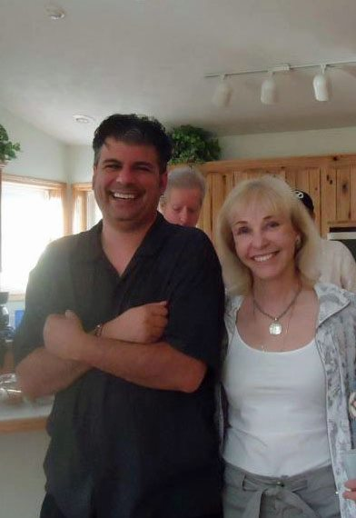
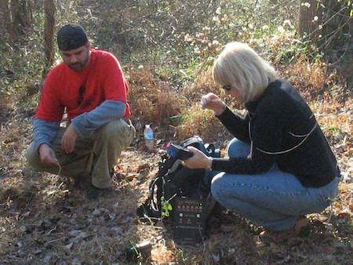

Jester-Knight
Literature
Film
Music
Visual Art
Tributes
Submissions
Links
Contact
Rosemary Ellen Guiley (1950 - 2019)

Remembering My Friend and Mentor “Ro”: A Tribute to Rosemary Ellen Guiley (1950–2019)
Of all the losses we are destined to suffer in the course of a lifetime, I find the loss of a mentor to be one of the hardest.
It was ten years ago this November that I first met Rosemary (whom I affectionately came to call Ro a few years into our multilayered relationship). A few months before, during a trip to Point Pleasant, WV to see the Mothman Museum with Tonya, we were driving back from the McClintock Wildlife Refuge (the TNT Area in local parlance) when we saw an interdimensional being.
Word quickly spread and Ro was one of a handful of investigators who met with us to recreate the circumstances of our experience and visit the site where the interdimensional appeared and disappeared.
That weekend was the start of a friendship, a mentorship, and eventually a relationship as writer and publisher.
The paranormal field is one that is met with endless cynicism. It attracts a lot of different personalities and the methods and authenticity of some of the investigators and even experiencers span a wide range, with the far end being outright fraud. There is also a lot of back-stabbing, trash-talking, and unproductive competition (read one-upmanship). Ro and I agreed that the TV “reality show” culture has not helped to legitimize the field and has created a vast number of misperceptions about a very important aspect of our experiences on Earth and what comes after.
But Ro was on the opposite end of that spectrum. She was professional beyond a doubt. Her methods that first weekend in Point Pleasant made a lasting impression on me. At the time, Tonya and I had no idea that, ten years later, we would be doing the same work as Ro was doing as often as we are, and have two books published about our work, with more on the way.
And it is all thanks to Ro. Her belief in us has been the driving force behind all that we have accomplished—and hope to continue to—in the field of paranormal research.
Ro was many things. First, she was an experiencer, which made her compassionate toward those she interviewed. She was a detail-oriented investigator, with a healthy balance of skepticism and deep belief. She was also a gifted writer, with over 60 titles to her credit—many of which are standards in the field. I have read about a quarter of them and have reviewed about ten. Tonya and I were honored to have our stories told in about a half dozen of them. So, when she asked Tonya to write Living the Intuitive Life: Cultivating Extraordinary Awareness in 2016 and asked us to write Watch Out for the Hallway: Our Two Year Investigation of the Most Haunted Library in North Carolina a year later for her imprint, Visionary Living Publishing, we were beyond honored—we were determined to apply all she had taught us to contribute in substantial ways to the field to which she had devoted her life.
Ro was also our friend, helping us through some tough times as a family and helping both Tonya and Jolie, our soon to be 20-year-old daughter—both of whom are gifted psychic mediums—to understand, develop, and apply their talents safely and to help others. She spent many nights at our “holler” home in West Virginia as both a friend and as an investigator and lectured on fairies and dreams at our New Mystics Center for Arts and Education. I have fond memories of our adventures, shared paranormal experiences, and of hearing her typing away in our guest bedroom, answering emails and writing her books.
Although she was often on the TV and radio, she was down to Earth and accessible—using these media to foster interest in the legitimacy of the paranormal and to share her theories and research with a broad audience. It was never about ego. Never about being a star.
Although, in many ways, she was.

Ro was the center of an informal band of investigators she dubbed The Mothman Irregulars, of which I am honored to be a founding member. A few other founding members—Steve Ward and John and Tim Frick—were there that first time in November. We mourn her loss together and carry on her work, which we experienced for many, many hours during our shared field investigations and roundtable chats at diners and in hotel lobbies until the early hours of the morning. At her request, Steve and I are now coauthoring a book, to be published mid-2020 by Visionary Living, which will carry on through her husband, Joe. Her example and guidance are weaved throughout its examination of the patterns and parallels of the phenomena we have all devoted so much time and energy to trying to understand.
Ro’s spirit and guidance are as powerful now as before she transitioned. Tonya and I have received many messages from her in a variety of ways (dreams, automatic writing, and even brief visits right before and after her passing) and we have heard from numerous colleagues who have reported the same.
It is a comfort to know that we have not truly lost our friend and mentor—that she is watching over and guiding us even as she collects firsthand data and experiences of the phenomena that she devoted her life to studying and reported about.
As she recently shared with Tonya through automatic writing: Bigfoot is real!
Just what that means… well, we’ll have to wait and see for ourselves.
We have been invited to speak about Ro by different organizations in recent weeks, and it is an honor to do so. This brief Tribute is just one way to express our gratitude to all she gave to us, and shared with us—in the field, in our home, and at events like the annual Mothman Festival—in the almost ten full years that we were lucky enough to know her on this fleeting plane of existence.